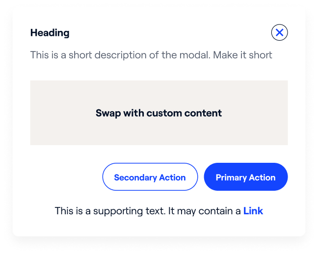
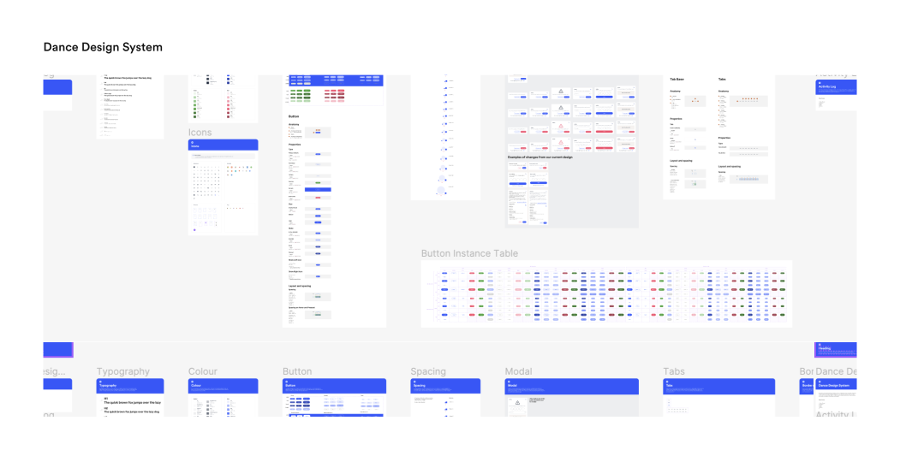

<!DOCTYPE html>
<html lang="en">
    <head>
        <meta charset="UTF-8" />
        <meta http-equiv="X-UA-Compatible" content="IE=edge" />
        <meta name="viewport" content="width=device-width, initial-scale=1.0" />
        <title>NachoNacho: B2B SaaS Marketplace</title>
        <meta
            name="description"
            content="A case study on redesigning San Francisco-based B2B SaaS startup User experience and interface to reduce churn and increase product and feature adoption."
        />
        <meta
            property="og:image"
            content="https://davidshittu.com/assets/images/nachonacho.jpg"
        />
        <script>
            let page = "nachonacho";
            let pPath;
            let prev = {};
            let next = {
                url: "./bolt.html",
                txt: "Bolt",
                bg: "#34D186",
            };
        </script>
        <script src="../js/header.js"></script>
        <style>
            :root {
                --works-primary: var(--primary);
            }
        </style>
        <main id="nachonachoPage" class="works">
            <section id="bannerSect" style="background-color: #2475FF">
                <div class="bodyCont">
                    <div class="bannerFlex">
                        <div class="txtContent">
                            <h1>
                                <span>
                                    NachoNacho: A B2B SaaS and Services
                                    Marketplace Powered by Fintech and AI
                                </span>
                                <span>
                                    NachoNacho: <br />
                                    B2B SaaS Marketplace
                                </span>
                            </h1>
                            <div class="content">
                                NachoNacho helps SaaS businesses manage their
                                subscriptions using credit cards and provides a
                                marketplace to discover and buy SaaS products.
                            </div>
                        </div>
                        <a
                            href="../assets/images/nachonacho/nachonacho_intro_img_combined.png"
                            target="_blank"
                            class="imgCont"
                        >
                            
                            
                        </a>
                    </div>
                </div>
            </section>
            <div id="otherBody" class="bodyCont">
                <div id="navCont">
                    <nav>
                        <a href="#overview" class="eachLink active">Overview</a>
                        <a href="#uxAudit" class="eachLink">UX Audit</a>
                        <a href="#problemAndSolution" class="eachLink"
                            >Problem & Solution</a
                        >
                        <a href="#impact" class="eachLink">Impact</a>
                        <a href="#more" class="eachLink">More</a>
                    </nav>
                </div>
                <div id="mainBody">
                    <div id="overview">
                        <div class="eachSect">
                            <h2>Overview</h2>
                            <div class="content">
                                NachoNacho is a B2B SaaS company based in San
                                Francisco that helps businesses manage all their
                                subscriptions in one place using virtual credit
                                cards. They also use AI to recommend discounted
                                SaaS products from their marketplace of over
                                25,000 businesses.
                            </div>
                        </div>
                        <div class="eachSect dFlex flexGrow1">
                            <div id="roleDuration">
                                <div class="eachCol">
                                    <h2>Role</h2>
                                    <div class="content">
                                        Product Designer <br />
                                        UX Researcher <br />
                                        Design System
                                    </div>
                                </div>
                                <div class="eachCol">
                                    <h2>Duration</h2>
                                    <div class="content">2022 - Present</div>
                                </div>
                            </div>
                            <a
                                href="https://nachonacho.com"
                                target="_blank"
                                class="borderedBtn"
                            >
                                <span>Visit Website</span>
                            </a>
                        </div>
                        <div class="eachSect" id="note">
                            <div class="content fadedBg">
                                As a product designer at NachoNacho, I worked
                                closely with a cross-functional team to design
                                an experience that advances our business goals.
                                This include product adoption, conversion, user
                                satisfaction, and engagement. <br /><br />
                                I've worked on many successful features, but for
                                this case study, I'll focus on how we increased
                                our conversion rate in our KYC process and drove
                                adoption of NachoCard, our virtual debit card.
                            </div>
                        </div>
                        <div class="eachSect">
                            <div class="zigZag">
                                <div class="each">
                                    <div class="txt"></div>
                                    <div class="date">October 2022</div>
                                    <div class="txt">
                                        I joined NachoNacho as a product
                                        designer with a focus on redesigning the
                                        SaaS app for adoption
                                    </div>
                                </div>
                                <div class="each">
                                    <div class="txt">
                                        I initiated the development of a design
                                        system to maintain consistency across
                                        our products.
                                    </div>
                                    <div class="date">July 2023</div>
                                    <div class="txt"></div>
                                </div>
                                <div class="each">
                                    <div class="txt"></div>
                                    <div class="date">November 2023</div>
                                    <div class="txt">
                                        We launched Mavens, NachoNacho Services
                                        Marketplace where SaaS business can find
                                        IT experts and consultants.
                                    </div>
                                </div>
                                <div class="each">
                                    <div class="txt">
                                        We launched Sherlock, an AI tool that
                                        analyzes business subscriptions to help
                                        spend management decisions.
                                    </div>
                                    <div class="date">February 2024</div>
                                    <div class="txt"></div>
                                </div>
                            </div>
                        </div>
                    </div>
                    <div id="uxAudit">
                        <div class="eachSect">
                            <h2>UX Audit and Competitive Analysis</h2>
                            <div class="content">
                                I conducted a UX audit of the app, analyzing it
                                in comparison to competitors, and identifying
                                our weaknesses and opportunities for growth.
                            </div>
                        </div>
                        <a
                            class="eachSect"
                            target="_blank"
                            href="../assets/images/nachonacho/ux_audit_and_competitive_analysis.png"
                        >
                            
                        </a>
                    </div>
                    <div id="problemAndSolution">
                        <div class="eachSect">
                            <h2>What was the Problem highlighted here?</h2>
                            <div class="content">
                                <ol>
                                    <li class="fadedBg">
                                        <div class="num">1.</div>
                                        <div class="txt">
                                            We had many users drop off during
                                            onboarding due to the lengthy KYC
                                            form and its placement in the
                                            process. This resulted in high churn
                                            during sign up
                                        </div>
                                    </li>
                                    <li class="fadedBg">
                                        <div class="num">2.</div>
                                        <div class="txt">
                                            Many users had a problem with
                                            creating a virtual card (NachoCard)
                                            for their subscription
                                        </div>
                                    </li>
                                </ol>
                            </div>
                        </div>
                        <div class="eachSect fadeTxt">
                            <div class="h2">1. KYC/KYB Verification</div>
                            <div class="content">
                                We had a lengthy KYC process because of the
                                mandatory information required by our bank
                                partner. This was a significant constraint in
                                solving the problem.
                            </div>
                        </div>
                        <div class="eachSect fadeTxt">
                            <div class="h2">
                                How might we optimize the KYC/KYB process during
                                onboarding to reduce user churn?
                            </div>
                            <div class="content">
                                <ul>
                                    <li>
                                        We streamlined the onboarding process by
                                        separating the KYC/KYB verification from
                                        the sign-up process, ensuring users are
                                        onboarded onto the app before requesting
                                        identity verification.
                                    </li>
                                    <li>
                                        We added a progress counter to keep user
                                        informed of their progress in the
                                        journey
                                    </li>
                                </ul>
                            </div>
                        </div>
                        <a
                            class="eachSect"
                            target="_blank"
                            href="../assets/images/nachonacho/flow.svg"
                        >
                            
                        </a>
                        <div class="eachSect fadeTxt">
                            <div class="content">
                                Users can now explore and get to know the app
                                before being asked for KYC/KYB verification.
                                This makes onboarding smoother and friendlier.
                                By letting users try out the app first, they can
                                see its value, which might make them more
                                willing to finish verification.
                            </div>
                        </div>
                        <a
                            class="eachSect"
                            target="_blank"
                            href="../assets/images/nachonacho/old_design.png"
                        >
                            
                        </a>
                        <div class="eachSect">
                            <div class="content fadedBg withArrow">
                                <div class="iconCont">
                                    <span class="svgIcon-arrowUp"></span>
                                </div>
                                <div class="txt">
                                    We significantly improved our KYC/KYB
                                    process by reducing the number of screens
                                    from 10 to 5. This, in combination with a
                                    product demo from the marketing team
                                    increase our sign up and onboarding
                                    significantly
                                </div>
                            </div>
                        </div>
                        <div class="eachSect fadeTxt">
                            <div class="h2">2. NachoCard</div>
                            <div class="content">
                                The creation process of our virtual debit card,
                                NachoCard, was inefficient and involved
                                navigating through multiple pages. <br /><br />
                                I redesigned the NachoCard creation process into
                                a single-page form, simplifying it and reducing
                                friction. This change increased completion time
                                and made it easier for users to spot and correct
                                mistakes.
                            </div>
                        </div>
                        <a
                            class="eachSect"
                            href="../assets/images/nachonacho/old_and_new_design.png"
                            target="_blank"
                        >
                            
                        </a>
                    </div>
                    <div class="eachSect" id="impact">
                        <h2>What was my impact?</h2>
                        <div class="content">
                            <div class="eachImpact fadedBg withArrow">
                                <div class="iconCont">
                                    <span class="svgIcon-arrowUp"></span>
                                </div>
                                <div class="txt">
                                    <div class="h2">20%</div>
                                    <div>
                                        Switching the position of the KYC
                                        allowed NachoNacho to grow by 20% under
                                        one year.
                                    </div>
                                </div>
                            </div>
                            <div class="eachImpact fadedBg withArrow">
                                <div class="iconCont">
                                    <span class="svgIcon-arrowUp"></span>
                                </div>
                                <div class="txt">
                                    <div class="h2">
                                        Paid subscription model
                                    </div>
                                    <div>
                                        We were able to increase our product
                                        adoption, allowing us to transition from
                                        a freemium to a paid subscription model.
                                    </div>
                                </div>
                            </div>
                        </div>
                    </div>
                    <div id="more">
                        <div class="eachSect fadeTxt">
                            <h2>More</h2>
                            <div class="content">
                                I created a style guide to ensure that
                                NachoNacho designs maintain consistency as we
                                introduce new features such as Mavens, SaaS
                                Marketplace, and others. This involved auditing
                                current components and refining them to align
                                with our evolving needs.
                            </div>
                        </div>
                        <a
                            class="eachSect"
                            target="_blank"
                            href="../assets/images/nachonacho/dance_design_system.svg"
                        >
                            
                        </a>
                        <a
                            class="eachSect"
                            target="_blank"
                            href="../assets/images/nachonacho/more_design2.png"
                        >
                            
                        </a>
                        <a
                            class="eachSect"
                            target="_blank"
                            href="../assets/images/nachonacho/ui_exploration.png"
                        >
                            
                        </a>
                        <div class="eachSect fadedBg">
                            <div class="h2">Key Takeaway</div>
                            <div class="content">
                                There were several challenges involved in
                                choosing the best direction for our users. We
                                had multiple instances of back-and-forth
                                discussions about the best approaches for our
                                designs, features, and more. In the end, data is
                                king. <br /><br />

                                I focused on being a user advocate while
                                striving to meet our business goals. It’s
                                diplomacy, really.
                            </div>
                        </div>
                    </div>
                    <script src="../js/worksFooter.js"></script>
                </div>
            </div>
        </main>
        <script src="../js/footer.js"></script>
    </head>
</html>
